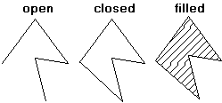
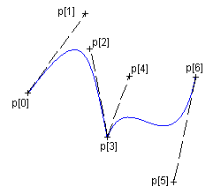

The functions cdBegin, cdVertex and cdEnd are use for many situations. cdBegin is called once, cdVertex can be called many times, and cdEnd is called once to actually do something. If you call cdBegin again before cdEnd the process is restarted, except for cdBegin(CD_REGION) that can contains one or more polygons inside.
void cdCanvasBegin(cdCanvas* canvas, int mode); [in C]
canvas:Begin(mode: number) [in Lua]
Starts defining a polygon to be drawn (or filled) according to the mode: CD_CLOSED_LINES, CD_OPEN_LINES, CD_FILL, CD_CLIP, CD_REGION or CD_BEZIER. Do not create embedded polygons, that is, do not call function cdBegin twice without a call to cdEnd in between.
Open, Closed and Filled Polygons

Bezier Lines

void cdCanvasVertex(cdCanvas* canvas, int x, int y); [in C]
void cdfCanvasVertex(cdCanvas* canvas, double x, double y); [in C]
void wdCanvasVertex(cdCanvas* canvas, double x, double y); (WC) [in C]
canvas:Vertex(x, y: number) [in Lua]
canvas:wVertex(x, y: number) (WC) [in Lua]
Adds a vertex to the polygon definition.
void cdCanvasEnd(cdCanvas* canvas); [in C]
canvas:End() [in Lua]
Ends the polygon's definition and draws it.